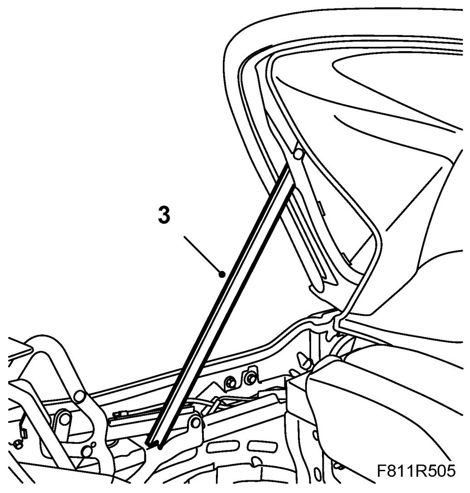
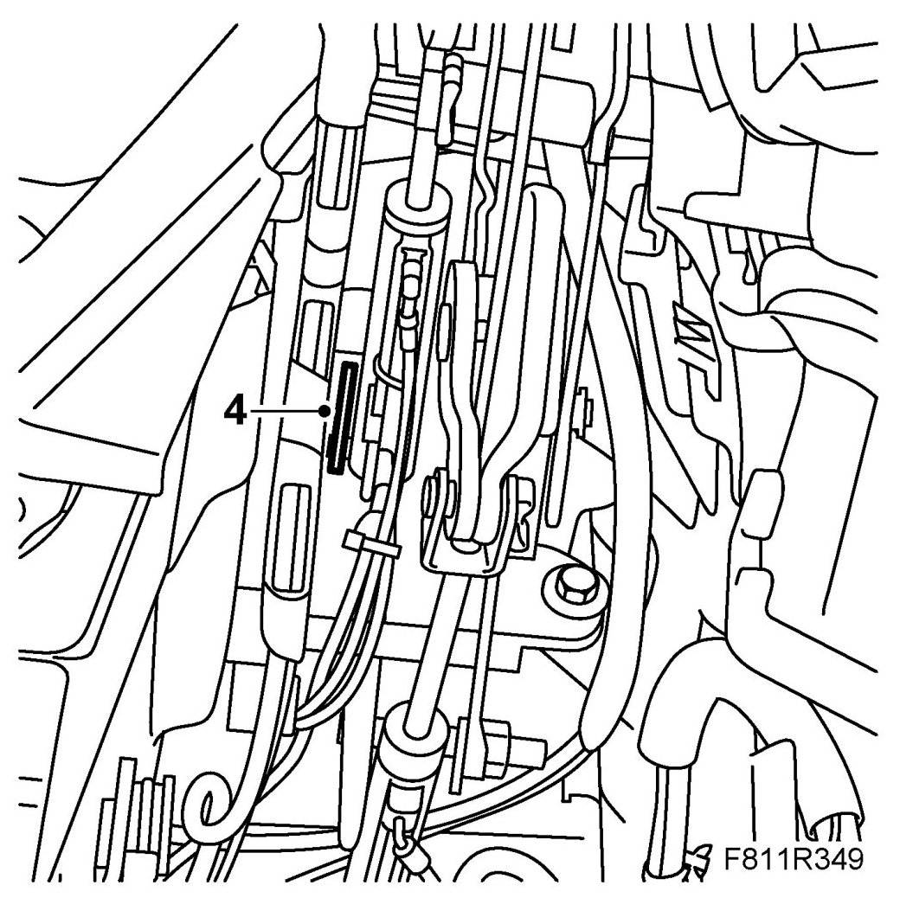
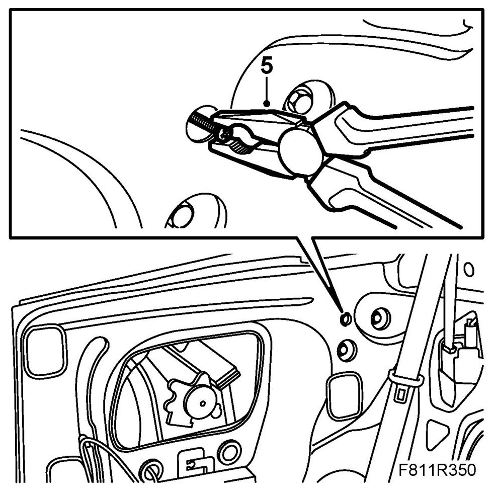
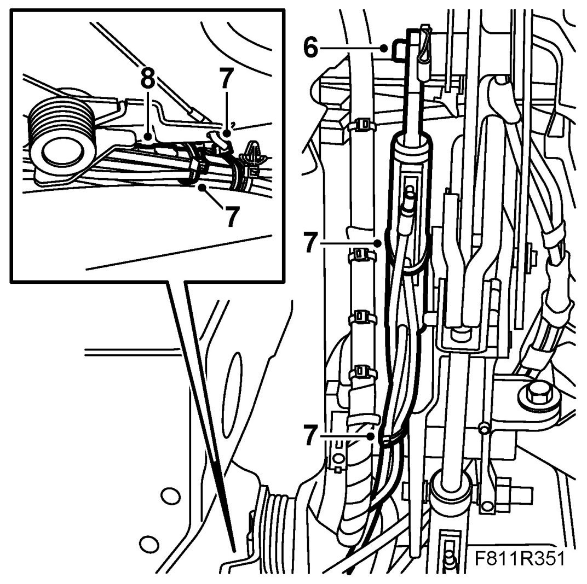
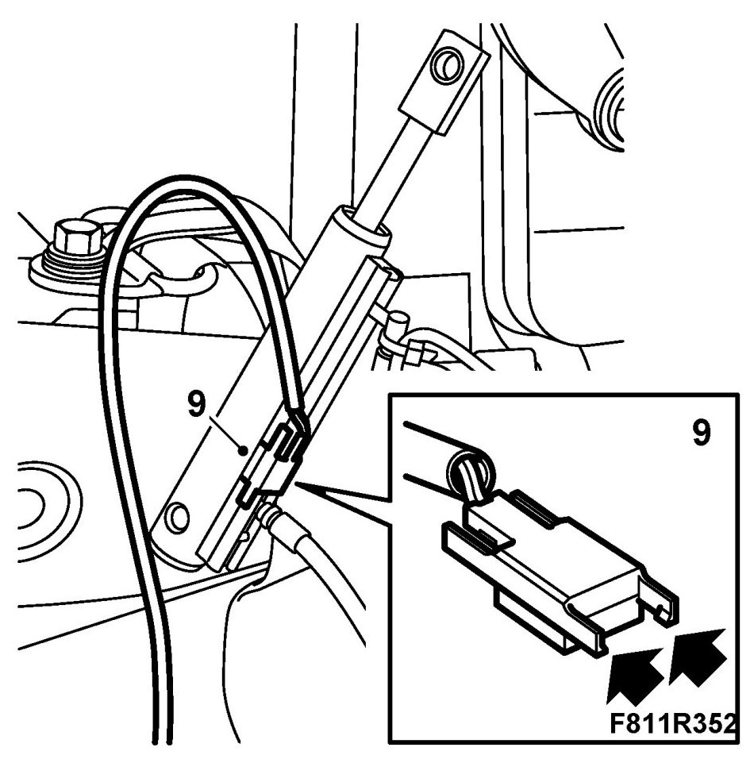
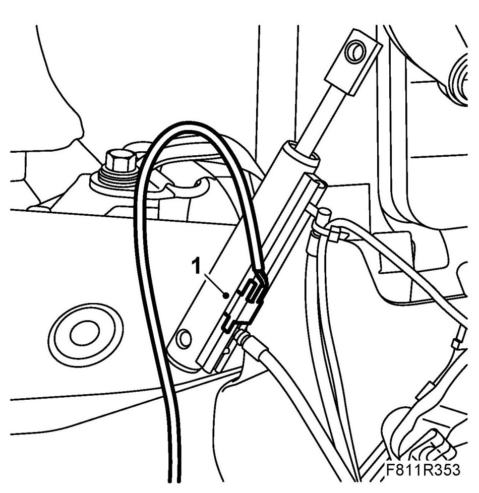
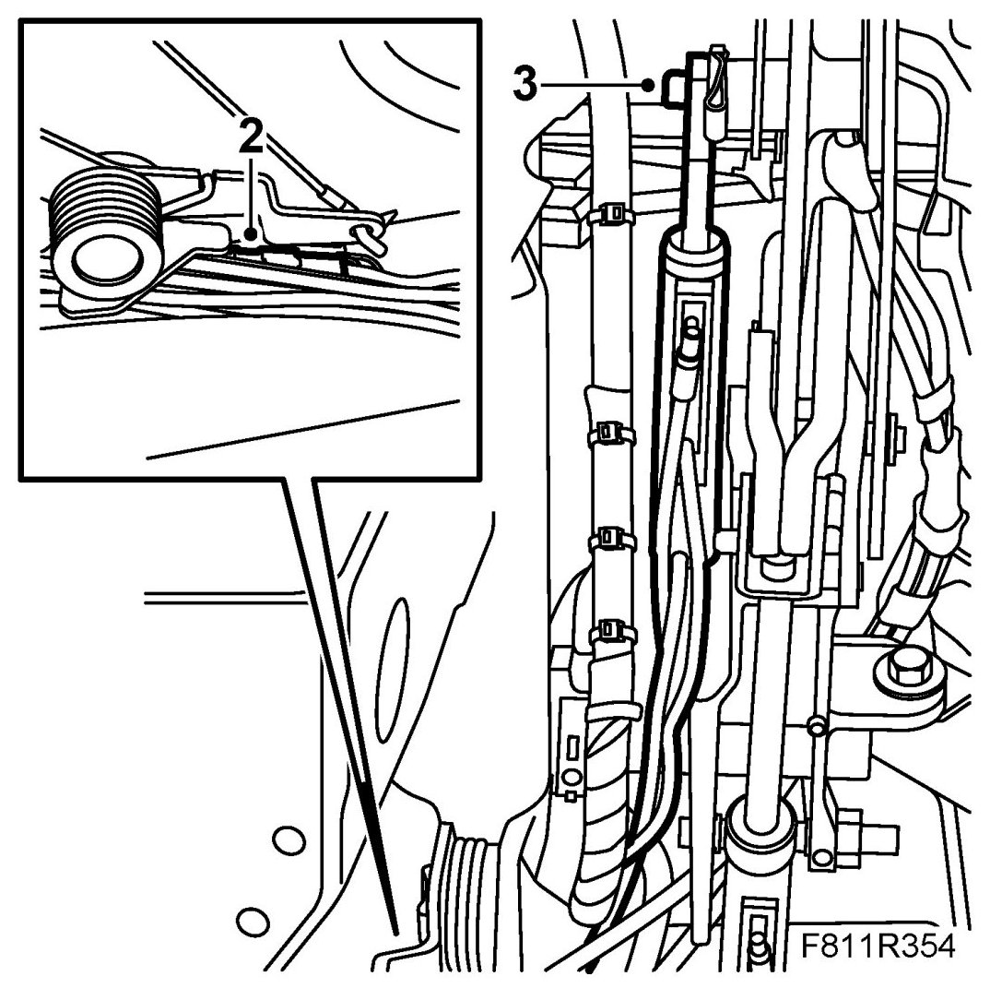
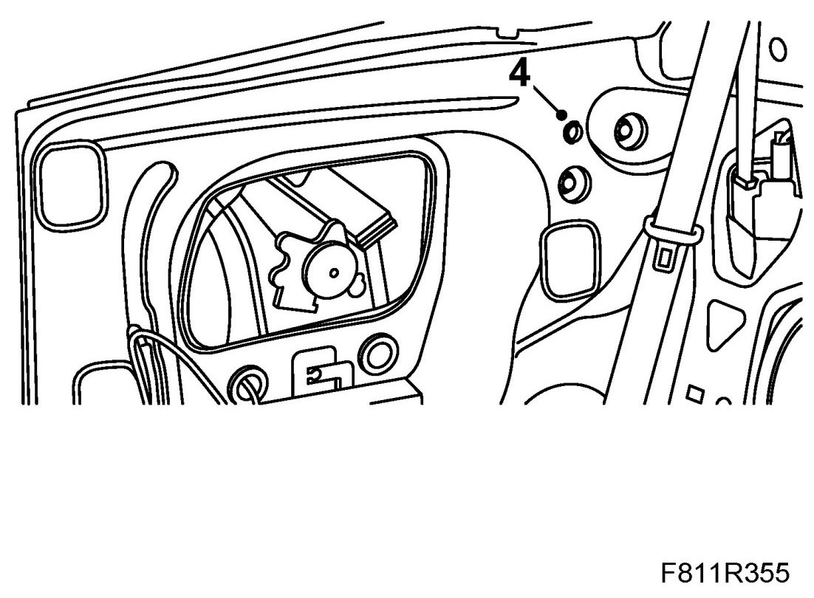
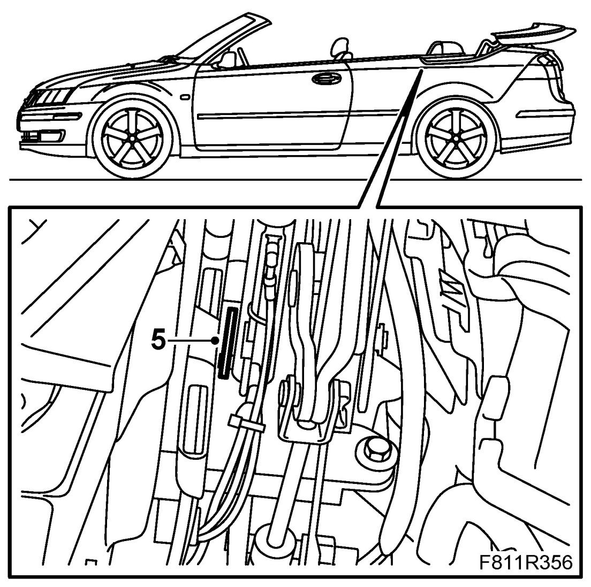
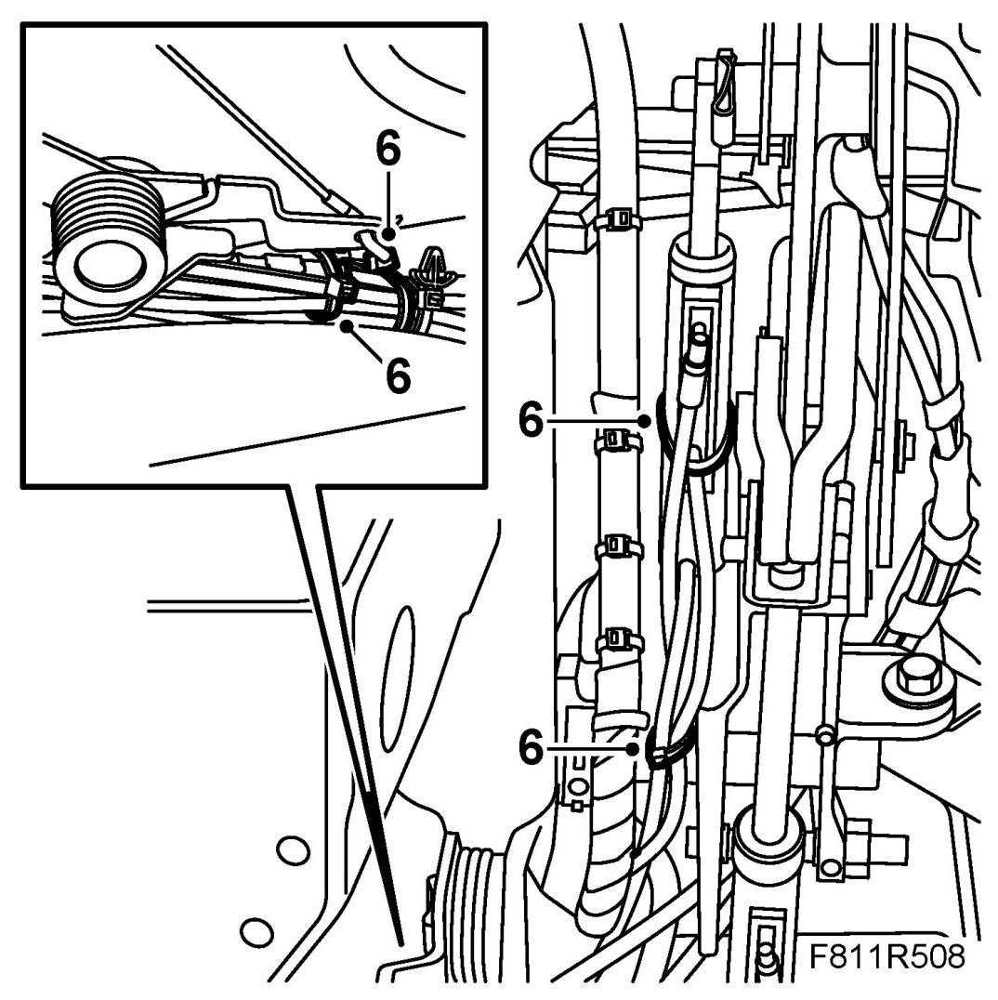

Position Sensor, Sixth Bow Raised (578U)
Position Sensor, Sixth Bow Raised (578U)
To remove
Only the hydraulic cylinder mounted on the right-hand side of the car is equipped with a position sensor.
1. Open the soft top fully and leave the soft top cover open.
2. Remove Seat cushion, rear seat, CV, Backrest, rear seat, CV and the right-hand Rear side trim, CV.
3. Close the soft top and leave the soft top cover and sixth bow open. Secure with the soft top support.

4. Remove the pin lock.

5. The hydraulic cylinder fastening pin must be drawn out through the opening in the torsion box side plate. Screw an M5 bolt (min. 40 mm long) into the internal thread of the fastening pin. Then pull out the fastening pin with a pair of pliers.

6. Remove the hydraulic cylinder piston rod from the fastening pin on the soft top mechanism and lift out the cylinder.

7. Remove the position sensor cable tie.
8. Remove the position sensor cable connector (grey).
9. Use a screwdriver to carefully loosen the position sensor from the hydraulic cylinder.

To fit
1. Fit the position sensor on the cylinder.

2. Connect the position sensor cable connector.

3. Put the hydraulic cylinder in mounting position. Fit the piston rod on the soft top mechanism fastening pin.
4. Place the hydraulic cylinder position for fitting. Fit the fastening pin from the inside through the opening in the torsion box side plate. Press in the pin until the groove for locking is visible.

5. Fit the locking ring.

6. Fit the position sensor cable tie.
IMPORTANT: Cables to hydraulic lines and position sensors must be refitted as they were earlier or there will be a risk of them being damaged when the soft top and soft top cover are operated.

7. Remove the soft top support and close the soft top.
8. Manoeuvre the soft top through 5 complete cycles in order to check soft top function.
9. Fit Rear side trim, Seat cushion, rear seat and Backrest, rear seat.
10. Connect the diagnostics tool and erase any diagnostic trouble code.